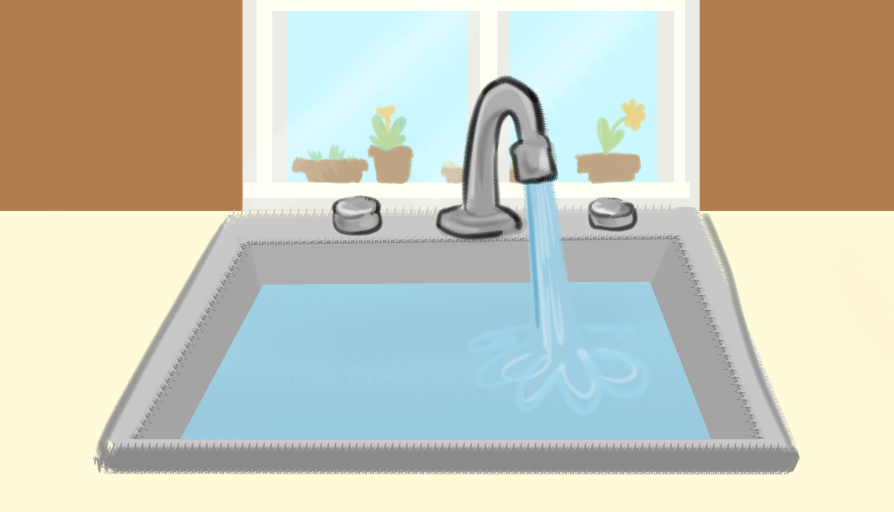

Did you know that 2.2 billion people in the world do not have access to clean water? Also, household leaks can waste approximately nearly 900 billion gallons of water annually nationwide, so make sure the tap is off when you're not using it!